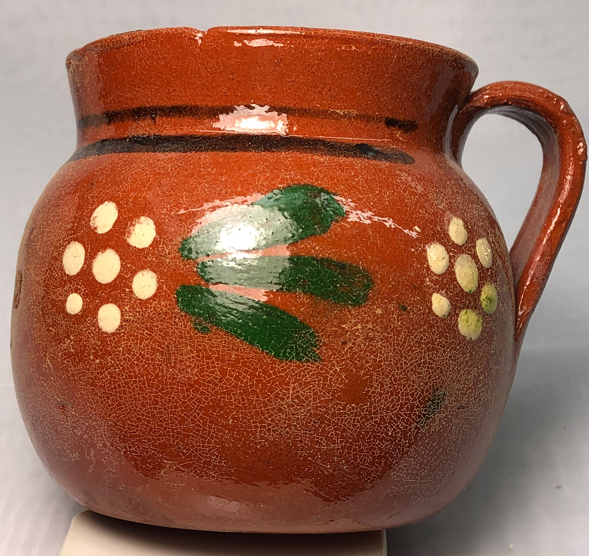
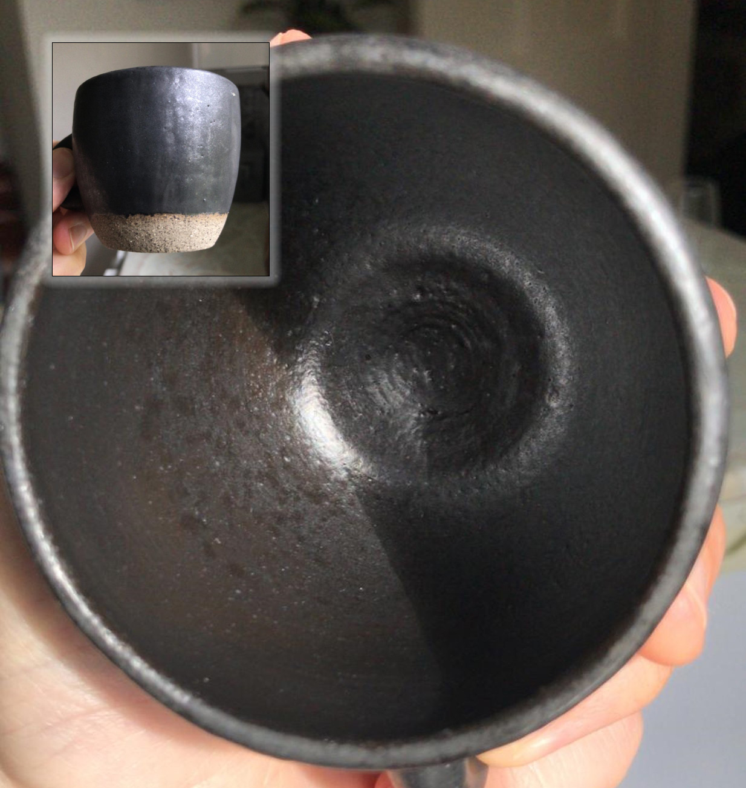
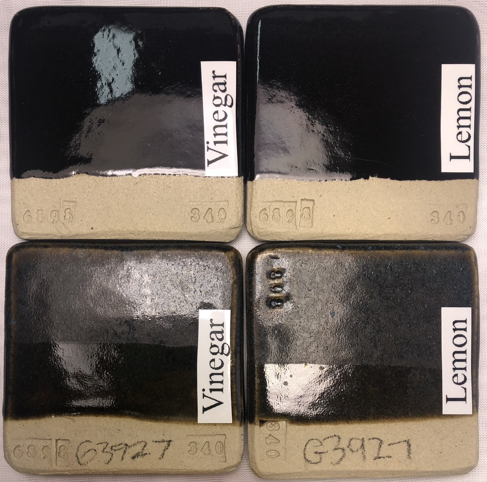

A Low Cost Tester of Glaze Melt Fluidity
A One-speed Lab or Studio Slurry Mixer
A Textbook Cone 6 Matte Glaze With Problems
Adjusting Glaze Expansion by Calculation to Solve Shivering
Alberta Slip, 20 Years of Substitution for Albany Slip
An Overview of Ceramic Stains
Are You in Control of Your Production Process?
Are Your Glazes Food Safe or are They Leachable?
Attack on Glass: Corrosion Attack Mechanisms
Ball Milling Glazes, Bodies, Engobes
Binders for Ceramic Bodies
Bringing Out the Big Guns in Craze Control: MgO (G1215U)
Can We Help You Fix a Specific Problem?
Ceramic Glazes Today
Ceramic Material Nomenclature
Ceramic Tile Clay Body Formulation
Changing Our View of Glazes
Chemistry vs. Matrix Blending to Create Glazes from Native Materials
Concentrate on One Good Glaze
Copper Red Glazes
Crazing and Bacteria: Is There a Hazard?
Crazing in Stoneware Glazes: Treating the Causes, Not the Symptoms
Creating a Non-Glaze Ceramic Slip or Engobe
Creating Your Own Budget Glaze
Crystal Glazes: Understanding the Process and Materials
Deflocculants: A Detailed Overview
Demonstrating Glaze Fit Issues to Students
Diagnosing a Casting Problem at a Sanitaryware Plant
Drying Ceramics Without Cracks
Duplicating Albany Slip
Duplicating AP Green Fireclay
Electric Hobby Kilns: What You Need to Know
Fighting the Glaze Dragon
Firing Clay Test Bars
Firing: What Happens to Ceramic Ware in a Firing Kiln
First You See It Then You Don't: Raku Glaze Stability
Fixing a glaze that does not stay in suspension
Formulating a body using clays native to your area
Formulating a Clear Glaze Compatible with Chrome-Tin Stains
Formulating a Porcelain
Formulating Ash and Native-Material Glazes
G1214M Cone 5-7 20x5 glossy transparent glaze
G1214W Cone 6 transparent glaze
G1214Z Cone 6 matte glaze
G1916M Cone 06-04 transparent glaze
Getting the Glaze Color You Want: Working With Stains
Glaze and Body Pigments and Stains in the Ceramic Tile Industry
Glaze Chemistry Basics - Formula, Analysis, Mole%, Unity
Glaze chemistry using a frit of approximate analysis
Glaze Recipes: Formulate and Make Your Own Instead
Glaze Types, Formulation and Application in the Tile Industry
Having Your Glaze Tested for Toxic Metal Release
High Gloss Glazes
Hire Us for a 3D Printing Project
How a Material Chemical Analysis is Done
How desktop INSIGHT Deals With Unity, LOI and Formula Weight
How to Find and Test Your Own Native Clays
I have always done it this way!
Inkjet Decoration of Ceramic Tiles
Leaching Cone 6 Glaze Case Study
Limit Formulas and Target Formulas
Low Budget Testing of Ceramic Glazes
Make Your Own Ball Mill Stand
Making Glaze Testing Cones
Monoporosa or Single Fired Wall Tiles
Organic Matter in Clays: Detailed Overview
Outdoor Weather Resistant Ceramics
Painting Glazes Rather Than Dipping or Spraying
Particle Size Distribution of Ceramic Powders
Porcelain Tile, Vitrified Tile
Rationalizing Conflicting Opinions About Plasticity
Ravenscrag Slip is Born
Recylcing Scrap Clay
Reducing the Firing Temperature of a Glaze From Cone 10 to 6
Setting up a Clay Testing Program in Your Company or Studio
Simple Physical Testing of Clays
Single Fire Glazing
Soluble Salts in Minerals: Detailed Overview
Some Keys to Dealing With Firing Cracks
Stoneware Casting Body Recipes
Substituting Cornwall Stone
Super-Refined Terra Sigillata
The Chemistry, Physics and Manufacturing of Glaze Frits
The Effect of Glaze Fit on Fired Ware Strength
The Four Levels on Which to View Ceramic Glazes
The Majolica Earthenware Process
The Potter's Prayer
The Right Chemistry for a Cone 6 Magnesia Matte
The Trials of Being the Only Technical Person in the Club
The Whining Stops Here: A Realistic Look at Clay Bodies
Those Unlabelled Bags and Buckets
Tiles and Mosaics for Potters
Toxicity of Firebricks Used in Ovens
Trafficking in Glaze Recipes
Understanding Ceramic Materials
Understanding Ceramic Oxides
Understanding Glaze Slurry Properties
Understanding the Deflocculation Process in Slip Casting
Understanding the Terra Cotta Slip Casting Recipes In North America
Understanding Thermal Expansion in Ceramic Glazes
Unwanted Crystallization in a Cone 6 Glaze
Using Dextrin, Glycerine and CMC Gum together
Volcanic Ash
What Determines a Glaze's Firing Temperature?
What is a Mole, Checking Out the Mole
What is the Glaze Dragon?
Where do I start in understanding glazes?
Why Textbook Glazes Are So Difficult
Working with children
Is Your Fired Ware Safe?
Description
Glazed ware can be a safety hazard to end users because it may leach metals into food and drink, it could harbor bacteria and it could flake of in knife-edged pieces.
Article
In the 1950's, chemical companies operated under the banner "better living through chemistry". We all know how that turned out! Like a teenager, their new-found technology convinced them that they knew it all. But we have matured and realize we know very little. It begs the question: What do chemists know now that each of us as potters and technicians can work with to produce products that are as safe as possible?
Leaching
All glazes and glasses are slowly dissolving. Stable glazes just dissolve slower. So we are aiming at a moving target, but in general, we want to achieve glazes that dissolve slow enough that we can barely detect it with sensitive instruments.
Leaching glazes can have either an acute or chronic effect; however, the former is rare. Chronic effects are difficult to recognize and even more difficult to trace. A chronic effect of barium, for example, is high blood pressure. Since so many people have high blood pressure, it means that barium poisoning will be just about impossible to recognize. Therefore, the burden is on the manufacturer of the ware to make double sure that barium will not leach or emulate its effects using a safer oxide like CaO or SrO.
Many well known pottery instructors encourage making glazes almost totally by trial and error on the material-mixing level, considering only aesthetics. They tell us to use these for non-functional purposes, but these labels are quickly lost by 'visual' people so taken by the interesting surfaces of flux and metal saturated glazes that they lose all interest in safety. If unstable glazes result by unbalanced formulations, I think we can safely assume that they also result from trial and error ones. I repeatedly see beginning potters employing toxic recipes from an "if it looks good use it" attitude (i.e. 30% barium, almost no silica or alumina, high metal content).
The lower the temperature the more the potential for danger. At high and middle fire, by simple brute force, we can melt high silica and alumina glazes which are inherently more stable. Lower temperatures require more know-how, more expensive materials, and more critical control of process and mixing factors. Thus there are more mistakes to be made and more serious results when things deviate.
We have a high degree of confidence that glazes made from kaolin, silica, feldspars, talc, dolomite, whiting, and wollastonite are safe. These materials provide mechanisms to produce almost any visual effect imaginable. Thus if you or your business does not have testing equipment to evaluate leaching behavior, or if you are not prepared to contract this testing service to someone else, it seems logical that you can protect your workers and customers by employing materials like the above.
A glaze is a structure made conceptually from oxides. These bond in preferred ways according to what the chemistry and firing permit. While there is a symmetry to the molecular structure of a crystal, a glass is so random that some claim that it is not even molecular in nature. The integrity of the structure is related to the balance of molecule types and limit tables make an attempt to summarize this balance. An imbalance means "loosely attached" molecules can be removed by oxidation or leaching of acidic or alkaline liquids. Lead is an excellent example of this. It can be used safely in a balanced glaze to produce stable and acid resistant containers (the same is true for barium and manganese). Whether most people know it or not, these materials are being used safety in commercial ware and since engineers stick within well defined limits. In many cases, it doesn't really take a rocket scientist to recognize an unbalanced glaze. For example, 2% manganese in a glaze is probably OK, but surely a 20% "saturated" should raise your eyebrows?
Most potters and small companies have little access to the materials safety databases of government and industry. This fact seems to obligate them toward a conservative approach, using clay and glaze formulas and firing techniques that are traditional and understood.
Remember also that the chemistry of a glaze is not the only consideration relating to its solubility in food and drink. A glaze must have enough heat to properly melt and bring into solution all of its constituent oxides. If it is not given the necessary time and temperature, glaze building is incomplete. The glass will be unstable and subject to mechanical and acid attack. A true matte glaze solidifies to the required reflectance properties because it has a low SiO2:Al2O3 ratio, or it has a micro-crystalline gloss surface. Needless to say, a true matte glaze is stable, functional, and safe.
It is actually not rocket science to test for leaching. John Hesselberth has done a lot of work in recent years studying the issue of leaching, you can find out more at his web site at www.frogpondpottery.com. One test he recommends is to simply put a lemon slice on a glazed plate or tile overnight and look for changes in gloss or color (amazingly, lemon juice is more acidic that vinegar). It can be quite remarkable how it can leach the color out of some glazes. Since bases (e.g. detergents) can also leach glazes, (not just acids) another interesting test is to leave one of two identical pieces of ware in your dishwasher for a few months and then compare them for differences in surface quality. If you would like more information on leach testing see the links below about test procedures and having your glaze tested at a lab.
Thermal Expansion
Crazing glazes are 'stretched' onto the ware and crack to relieve the stress. The cracks can host bacteria colonies, especially if the underlying body is porous and therefore keeps the micro-environment damp. Crazing of a liner glaze will also expose metallic slips underneath that it is supposed to be covering. Crazed ware will not pass restaurant inspection. At Digitalfire we provide a lot of information of dealing with this issue. Glaze chemistry really shines in the area of thermal expansion adjustment of fired glazes. The are many ways to tune the chemistry of an offending glaze while having a minimum effect on its fired properties (or improve them at the same time). If you need the best possible control you should measure the thermal expansion of your body and glaze on an ongoing basis using a dilatomter or having a lab do it.
Shivering glazes are another issue. If the glaze is overly compressed onto the ware and is being squeezed it can relieve the stress by flaking off at edges. This is a serious situation since these glassy flakes with knife edges could be ingested. Shivering is not nearly as common as crazing. It is most likely to happen on bodies very high in silica (highly plastic super high ball clay stoneware bodies have become popular in recent years and are an example). Unusual glazes such as those high in lithium or magnesia with accompanying high silica can shiver (this is most likely at higher temperatures). Situations where the glaze body bond is not as good also need extra vigilance.
Related Information
Commercial glazes on decorative surfaces
Your own on food surfaces

This picture has its own page with more detail, click here to see it.
These cone 6 porcelain mugs are hybrid. Three coats of a commercial glaze painted on the outside (Amaco PC-30) and my own liner glaze, G2926B, poured in and out on the inside. When commercial glazes (made by one company) fit a stoneware or porcelain (made by another company) it is by accident, neither company designed for the other! For inside food surfaces make or mix a liner glaze already proven to fit your clay body, one that sanity-checks well (as a dipping glaze or a brushing glaze). In your own recipes you can use quality materials that you know deliver no toxic compounds to the glass and that are proportioned to deliver a balanced chemistry. Read and watch our liner glazing step-by-step and liner glazing video for details on how to make glazes meet at the rim like this.
Vinegar dissolved the inside glaze and crazed the outside one!

This picture has its own page with more detail, click here to see it.
This is a piece of traditional Mexican lead-glazed terra cotta. It is fired at 1800-1850F. Upon leaving white vinegar in it overnight the entire inside surface was altered to the point it appeared the glaze had dissolved away! Then that vinegar migrated outward through the porous walls, came through the craze lines in the outer glaze (which were not visible before), and on evaporation left the lead behind in the crazing pattern! The water-logging of the piece expanded it thus crazing the outside glaze. Fritted lead glazes don't do this.
It is possible to spot a leaching glaze just by looking at it!

This picture has its own page with more detail, click here to see it.
This glaze looks too matte, too metallic, too crystalline. This picture was sent to me by a worried person who had bought it and noticed it discolouring on the inside. The potter may very well have considered this safe just because it was fired to cone 10. It is common among potters to overload glazes with raw metal oxide blends, often 15% or more (e.g. manganese, copper, iron, nickel, cobalt). These percentages cannot be held in solution in the melt as it cools and solidifies, so they precipitate out and crystallize, especially if the glaze is not melting well or has insufficient SiO2. The crystalline forms of these metals might look nice to some people, but the glaze is likely to leach them. It is better to use a ceramic stain to create a black like this, adding it to a stable matte base glaze (one that melts well and has sufficient SiO2 and Al2O3 to create a durable glass). The concept of a limit recipe is helpful in eyeballing recipes for their likelihood of leaching.
Two black cone 6 glazes recipes. One leaches metals. Why?

This picture has its own page with more detail, click here to see it.
We tested susceptibility to leaching of a stained glaze (top two) and another colored with raw metal oxides (bottom two) using the GLLE test (they were left overnight in vinegar and lemon juice). All the samples were fired using the C6DHSC firing schedule. The top two are G3914A (GA6-B Alberta Slip base with an addition of only 4% Mason 6600 black stain). There is no sign of leaching (Drano and bleach likewise did not affect it). The bottom two are G2926B transparent with 10% manganese dioxide and 5% copper oxide added (a common way to get black). The G2926B transparent base is proven, its surface shows no signs of gloss-loss in any testing we have done. But with manganese and copper added it is a very different story. Not only was this not nearly as black, but the vinegar and lemon juice matted and blued the top sections. Obviously, a ceramic stain added to the Alberta Slip GA6-B base is a far better way to make a leach-resistant black. Is it better than adding the black stain to G2926B? Yes, because far less is needed since the GA6-B base already has plenty of pigmentation.
Links
| Articles |
Having Your Glaze Tested for Toxic Metal Release
Having Your Glaze Tested for Metal Release |
| Articles |
An Overview of Ceramic Stains
Understanding the advantages of disadvantages of stains vs. oxide colors is the key to choosing the best approach |
| Articles |
Attack on Glass: Corrosion Attack Mechanisms
Max Richens outlines the various mechanisms by which acids and bases can dissolve glass and glazes. He provides some information on stabilizing glazes against attack. |
| Articles |
Are Your Glazes Food Safe or are They Leachable?
Many potters do not think about leaching, but times are changing. What is the chemistry of stability? There are simple ways to check for leaching, and fix crazing. |
| Articles |
Toxicity of Firebricks Used in Ovens
Toxicity concerns about the use of firebrick or alumina brick to make ovens used for baking bread |
| Articles |
Leaching Cone 6 Glaze Case Study
An example of how we can use INSIGHT software to determine of a glaze is likely to leach |
| Articles |
Crazing and Bacteria: Is There a Hazard?
A post to a discussion on the clayart group by Gavin Stairs regarding the food safety of crazed ware. |
| Articles |
Concentrate on One Good Glaze
It is better to understand and have control of one good base glaze than be at the mercy of dozens of imported recipes that do not work. There is a lot more to being a good glaze than fired appearance. |
| Tests |
Glaze Leaching Test
Simple tests to evaluate the stability of a ceramic or pottery glaze against leaching metals in food or drink. |
| Tests |
Boiling Water:Ice Water Glaze Fit Test
Ceramic glazes that do not fit the body often do not craze until later. This test stresses the fit, thus revealing if it is likely to craze later. |
| Tests |
300F:Ice Water Crazing Test
Ceramic glazes that do not fit the body often do not craze until later. This progressively stresses the fit until failure point, thus giving it a score |
| Projects |
Hazards
|
| Troubles |
Glaze Crazing
Ask the right questions to analyse the real cause of glaze crazing. Do not just treat the symptoms, the real cause is thermal expansion mismatch with the body. |
| Materials |
Feldspar
In ceramics, feldspars are used in glazes and clay bodies. They vitrify stonewares and porcelains. They supply KNaO flux to glazes to help them melt. |
| Glossary |
Microwave Safe
Microwave safety is a concern in the production of function ceramic ware. |
| Glossary |
Leaching
Ceramic glazes can leach heavy metals into food and drink. This subject is not complex, there are many things anyone can do to deal with this issue |
| Glossary |
Glaze Crazing
Crazed ceramic glazes have a network of cracks. Understanding the causes is the most practical way to solve it. 95% of the time the solution is to adjust the thermal expansion of the glaze. |
| Glossary |
Toxicity
Common sense can be applied to the safe use of ceramic materials. The obvious dangers are breathing the dust and inhaling the fumes they produce during firing. Here is a round-up of various materials and their obvious hazards. |
| Glossary |
Metal Oxides
Metal oxide powders are used in ceramics to produce color. But a life time is not enough to study the complexities of their use and potential in glazes, engobes, bodies and enamels. |
| Media |
Liner Glazing a Stoneware Mug
I will show you how to glaze a mug with a liner glaze inside and a colored one outside so that they meet in a perfect line at the rim. |
| Typecodes |
Ceramic Testing Labs
There is much physical testing you can do using simple procedures and equipment (as described on this site) to compare ceramic bodies, glazes, engobes, etc. Such testing, for example, shows you that one clay is more plastic than another, one glaze has more melt fluidity than another or one engobe has a higher firing shrinkage than another. But if you want data to represent the absolute value of a specific property (e.g. coefficient of thermal expansion, chemical or mineralogical analysis) you may need the services of a testing lab. Most labs have grown over time and offer a wide array of services for many industries, so it can be difficult to locate the specific test you need. Effectively using their services is about knowing exactly what you want, finding their sample preparation instructions for the specific test needed and then following these closely to get the desired result at the expected cost. Having just one test done to answer one question is not typical, normally one has a specific test done on multiple samples, learning to interpret the data over time. If you want to test for leaching in a ceramic glaze consider carefully if you will be able to interpret the results they give you. There is a good chance they will give you a report full of numbers but decline to make any technical assessments or interpretation regarding it. Read our articles on this (listed below) for alternatives that may be more practical. |
 PayPal | No tracking, No ads, No paywall, No transient content! Just organized, concise information constantly updated and improved. Was this helpful? Consider supporting me. |
| By Tony Hansen Follow me on        |  |
Got a Question?
Buy me a coffee and we can talk 

https://digitalfire.com, All Rights Reserved
Privacy Policy